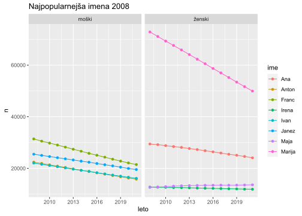
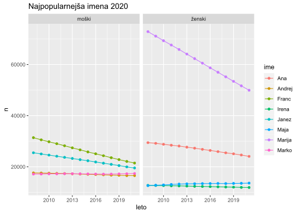
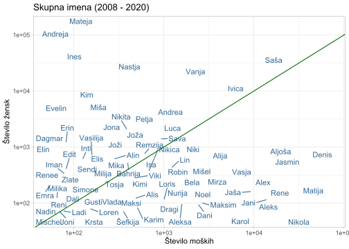
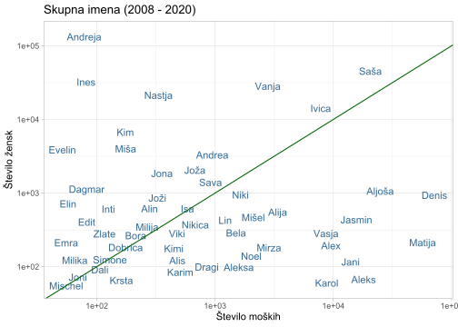

Kapitel 22 Slovenska imena
library(tidyverse)
library(readxl)https://www.stat.si/StatWeb/news/Index/9597
https://pxweb.stat.si/SiStatData/pxweb/sl/Data/Data/05X1010S.px/ https://pxweb.stat.si/SiStatData/pxweb/sl/Data/Data/05X1005S.px/
22.1 Podatkovna niza
Glede na majhnost podatkovnih nizov so primerne tudi Excelove datoteke.
xlsx_files <- dir("data/names", pattern = "*.xlsx", full.names = TRUE)
moska_xlsx <- read_xlsx(xlsx_files[1], skip = 3) %>%
janitor::clean_names() %>%
rename(name = x1) %>%
mutate(spol = "moški")
zenska_xlsx <- read_xlsx(xlsx_files[2], skip = 3) %>%
janitor::clean_names() %>%
rename(name = x1) %>%
mutate(spol = "ženski")
slo_imena_xlsx <- bind_rows(moska_xlsx, zenska_xlsx) %>%
select(name,spol, x2008:x2021)
slo_imena_xlsx %>% slice_sample(n = 10)## # A tibble: 10 x 16
## name spol x2008 x2009 x2010 x2011 x2012 x2013 x2014 x2015 x2016 x2017 x2018
## <chr> <chr> <chr> <chr> <chr> <chr> <chr> <chr> <chr> <chr> <chr> <chr> <chr>
## 1 Fede~ moški 7 9 9 10 9 8 10 9 11 15 15
## 2 Džev~ žens~ 8 9 9 9 8 9 9 9 9 9 8
## 3 Štef~ žens~ 4885 4749 4628 4493 4378 4246 4101 3972 3833 3685 3564
## 4 Drina žens~ 9 9 9 9 9 9 9 8 8 9 9
## 5 Maisa žens~ - - - - - - - - 5 5 5
## 6 Tani~ žens~ 27 27 27 27 25 24 24 24 24 24 24
## 7 Salem moški 14 18 22 22 22 22 21 23 23 24 25
## 8 Maks~ moški - - - - - 5 - 7 9 10 14
## 9 Narc~ moški 14 12 13 13 15 16 17 17 17 16 16
## 10 Meli~ žens~ 49 47 48 51 53 58 60 66 67 66 68
## # ... with 3 more variables: x2019 <chr>, x2020 <chr>, x2021 <chr>Če moramo prebrati številne in velike podatkovne nize so primernejše besedilne datoteke (csv, …).
# Read
files <- dir("data/names", pattern = "*.csv", full.names = TRUE)
moska <- read.delim(files[1], sep = ",") %>%
janitor::clean_names() %>%
mutate(spol = "moški")
m1 <- moska %>%
select(ime,spol)
m2 <- moska %>%
select(-ime, -spol) %>%
mutate_all(function(x) gsub("-","0", x)) %>%
mutate(across(where(is.character), as.numeric))
moska <- bind_cols(m1, m2)
zenska <- read.delim(files[2], sep = ",") %>%
janitor::clean_names() %>%
mutate(spol = "ženski")
z1 <- zenska %>%
select(ime,spol)
z2 <- zenska %>%
select(-ime, -spol) %>%
mutate_all(function(x) gsub("-","0", x)) %>%
mutate(across(where(is.character), as.numeric))
zenska <- bind_cols(z1, z2)
slo_imena <- bind_rows(moska, zenska) %>%
select(ime, spol, stevilo_2008:stevilo_2021) %>%
rename_all(function(x) gsub("stevilo_", "leto_", x))
slo_imena %>% slice_sample(n = 10)## ime spol leto_2008 leto_2009 leto_2010 leto_2011 leto_2012
## 1 Moris moški 14 14 14 14 14
## 2 Veseljka ženski 12 12 12 12 13
## 3 Marija Valentina ženski 5 5 5 5 5
## 4 Neli ženski 438 504 551 611 677
## 5 Augusto moški 0 0 0 0 0
## 6 Blina ženski 0 0 0 0 0
## 7 Peter Franc moški 13 13 13 13 13
## 8 Lan Martin moški 0 0 0 0 0
## 9 Alemka ženski 0 0 0 0 0
## 10 Hasija ženski 27 28 29 30 31
## leto_2013 leto_2014 leto_2015 leto_2016 leto_2017 leto_2018 leto_2019
## 1 13 14 14 13 14 13 10
## 2 13 13 13 13 13 13 13
## 3 5 5 5 5 5 5 0
## 4 730 779 813 855 887 915 942
## 5 0 0 0 5 5 0 5
## 6 0 0 0 0 0 5 0
## 7 12 11 11 11 10 10 10
## 8 0 0 0 0 0 5 5
## 9 0 0 0 0 0 0 5
## 10 31 31 31 32 33 32 37
## leto_2020 leto_2021
## 1 11 12
## 2 13 12
## 3 0 0
## 4 969 1005
## 5 5 5
## 6 0 5
## 7 9 8
## 8 5 5
## 9 0 0
## 10 39 38slo_names <- slo_imena %>%
pivot_longer(leto_2008:leto_2021,
names_to = c("leto"), values_to = "n") %>%
mutate(leto = as.numeric(str_remove(leto, "leto_")))
slo_names %>% slice_sample(n = 10)## # A tibble: 10 x 4
## ime spol leto n
## <chr> <chr> <dbl> <dbl>
## 1 Toda ženski 2014 10
## 2 Aleksandra Saša ženski 2018 23
## 3 Ljubomira ženski 2015 108
## 4 Anđelo moški 2017 22
## 5 Todorka ženski 2017 8
## 6 Irenca ženski 2012 104
## 7 Luce ženski 2010 7
## 8 Marija Božena ženski 2008 8
## 9 Ismajl moški 2009 14
## 10 Nehat moški 2020 2322.2 Priprava
topNames <- slo_names %>%
filter(leto >= 2008) %>%
group_by(ime, spol) %>%
summarize(n = as.numeric(sum(n))) %>%
filter(n > 10) %>%
select(ime, spol)
filteredNames <- slo_names %>%
filter(leto >= 2008) %>%
inner_join(topNames)
yearlyNames <- filteredNames %>%
group_by(leto, ime, spol) %>%
summarize(n = as.numeric(sum(n)))22.3 Najpopularnejša imena 2008
library(scales)
topNames2008 <- yearlyNames %>%
filter(leto == 2008) %>%
group_by(ime, spol) %>%
summarize(n = sum(n)) %>%
group_by(spol) %>%
mutate(rank = min_rank(desc(n))) %>%
filter(rank < 5) %>%
arrange(spol, rank) %>%
select(ime, spol, rank)
topNames2008Yearly <- yearlyNames %>%
inner_join(topNames2008)
ggplot(topNames2008Yearly, aes(leto, n, color = ime)) +
geom_line() +
geom_point() +
# scale_y_log10() +
facet_grid(~ spol, scales = "free_y") +
ggtitle("Najpopularnejša imena 2008")
ggsave("pictures/PopNames2008.png")22.4 Najpopularnejša imena 2020
topNames2020 <- yearlyNames %>%
filter(leto == 2020) %>%
group_by(ime, spol) %>%
summarize(n = sum(n)) %>%
group_by(spol) %>%
mutate(rank = min_rank(desc(n))) %>%
filter(rank < 5) %>%
arrange(spol, rank) %>%
select(ime, spol, rank)
topNames2020Yearly <- yearlyNames %>%
inner_join(topNames2020)
ggplot(topNames2020Yearly, aes(leto, n, color = ime)) +
geom_line() +
geom_point() +
# scale_y_log10() +
facet_grid(~ spol, scales = "free_y") +
ggtitle("Najpopularnejša imena 2020")
ggsave("pictures/PopNames2008.png")22.5 Skupna imena
Katera imena so lahko tako moška kot ženska imena?
sharedName <- slo_names %>%
mutate(male = ifelse(spol == "moški", n, 0), female = ifelse(spol == "ženski", n, 0)) %>%
group_by(ime) %>%
summarize(Moski = as.numeric(sum(male)),
Zenska = as.numeric(sum(female)),
n = as.numeric(sum(n)),
AvgYear = round(as.numeric(sum(leto * n) / sum(n)),0)) %>%
filter(Moski > 50 & Zenska > 50)library(rbokeh)
# or to set the theme for all future plots
options(bokeh_theme = bk_default_theme) # bk_ggplot_theme
figure(width = NULL, height = NULL,
xlab = "Število moških",
ylab = "Število žensk",
title = "Skupna imena (2008 - 2020)") %>%
ly_points(Moski, Zenska, data = sharedName,
color = AvgYear, size = scale(sqrt(n)),
hover = list(ime, Moski, Zenska, AvgYear),
legend = FALSE) %>%
ly_abline(0, 1, color = "darkgreen")library(ggrepel)
set.seed(43)
shared2 <- sharedName %>%
group_by(ime, Moski, Zenska) %>%
ggplot(aes(Moski, Zenska, color = AvgYear)) +
scale_x_log10() +
scale_y_log10() +
# geom_point(aes(size = scale(sqrt(n)))) +
# geom_text(aes(label = ime), check_overlap = T) +
geom_text_repel(aes(label = ime)) +
geom_abline(aes(intercept = 0, slope = 1), color = "darkgreen") +
theme_light() +
theme(legend.position = "none") +
labs(x= "Število moških", y = "Število žensk",
title = "Skupna imena (2008 - 2020)")
ggsave("pictures/shared_names2.png")
shared2
shared <- sharedName %>%
group_by(ime, Moski, Zenska) %>%
ggplot(aes(Moski, Zenska, color = AvgYear)) +
# scale_x_continuous(labels = scales::comma_format(accuracy = 1)) +
scale_x_log10() +
scale_y_log10() +
# geom_point(aes(size = scale(sqrt(n)))) +
geom_text(aes(label = ime), check_overlap = T) +
geom_abline(aes(intercept = 0, slope = 1), color = "darkgreen") +
theme_light() +
theme(legend.position = "none") +
labs(x= "Število moških", y = "Število žensk",
title = "Skupna imena (2008 - 2020)")
ggsave("pictures/shared_names.png")
shared
sharedName %>%
filter(ime == "Saša")## # A tibble: 1 x 5
## ime Moski Zenska n AvgYear
## <chr> <dbl> <dbl> <dbl> <dbl>
## 1 Saša 20600 45217 65817 56406library(plotly)
ggplotly(shared,
tooltip = c("ime","Moski","Zenska","AvgYear")) %>%
layout(legend = list(x = 0.3, y = -0.05, itemsizing = "trace",
orientation = "h"))library(plotly)
plotly_p1 <- ggplotly(
shared, width = 850, height = 700,
tooltip = c("ime","Moski","Zenska","AvgYear")) %>%
layout(dragmode = "pan",
legend = list(x = 0.3, y = -0.05, itemsizing = "trace",
orientation = "h"))
plotly_p1##### Save it locally
library(htmlwidgets)
htmlwidgets::saveWidget(as_widget(plotly_p1),
"plotly_pics/shared_names.html")library(plotly)
x = seq(0, 10^5)
y = seq(0, 10^5)
fig <- sharedName %>%
group_by(ime, Moski, Zenska, AvgYear) %>%
plot_ly(x = ~Moski, y = ~Zenska,
# width = 850, height = 700
hoveron = c("ime","Moski","Zenska","AvgYear")) %>%
# add_markers(text = ~paste("AvgYear: ", AvgYear),
# name = "Povprečje/leto",
# symbol = I("circle"),
# size = I(4),
# opacity = I(0.2)) %>%
add_markers(text = ~paste("Razmerje M/Ž: ",
round(Moski/Zenska, 2)),
color = ~Moski/Zenska,
symbol = I("square"),
size = I(12),
opacity = I(1),
name = "Razmerje M/Ž") %>%
add_markers(text = ~paste("Ime: ", ime),
name = "Osebno ime",
color = ~Moski/Zenska,
symbol = I("circle"),
size = I(1),
opacity = I(0)) %>%
layout(
title = "Število skupnih imen",
xaxis = list(
title = "Število moških",
rangeslider = list(type = "x")
),
yaxis = list(
title = "Število žensk"
)
)
fig ##### Save it locally
library(htmlwidgets)
htmlwidgets::saveWidget(as_widget(fig),
"plotly_pics/plotly_fig_shared_names.html")